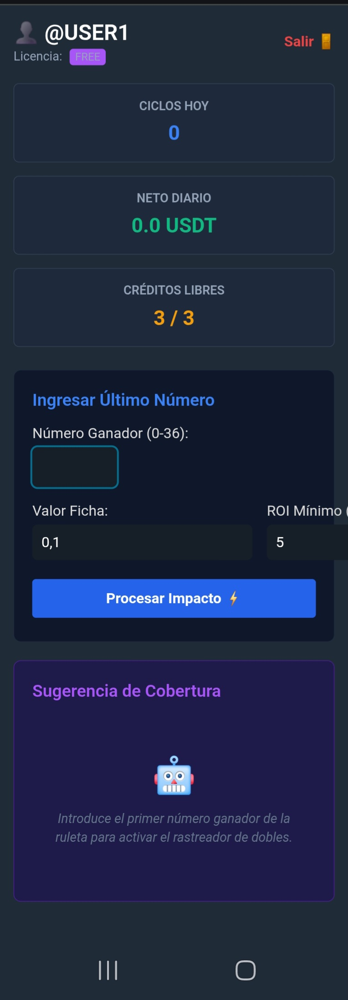

Desmitificando la Ruleta: Estrategias Populares vs. El Poder de la Automatización con Software
La ruleta ha sido, por siglos, uno de los desafíos matemáticos más atractivos del mundo del azar. Muchos jugadores buscan el sistema perfecto que logre inclinar la balanza a su favor. En este artículo, analizaremos las estrategias tradicionales más conocidas, sus fallos inherentes y cómo la tecnología actual puede cambiar las reglas del juego.
Las Estrategias Tradicionales y sus Límites
Casi todo jugador que empieza a estudiar la ruleta se topa con los mismos sistemas clásicos. Aunque parecen lógicos sobre el papel, todos chocan contra la dura realidad de la ventaja de la casa y los límites de la mesa.
1. La Martingala
Es el sistema más famoso: duplicar la apuesta después de cada pérdida en apuestas de probabilidad de casi el 50% (Rojo/Negro, Par/Impar). * El problema: Requiere una banca infinita. Una racha larga de pérdidas consecutivas te llevará rápidamente a alcanzar el límite de apuesta de la mesa o a vaciar tu saldo.
2. El Sistema D'Alembert
Basado en la ley de equilibrio, consiste en añadir una unidad de apuesta tras una pérdida y restar una unidad tras una victoria. * El problema: Asume erróneamente que la ruleta "recuerda" los resultados anteriores para equilibrar las cosas a corto plazo, lo cual es una falacia matemática.
3. La Estrategia Fibonacci
Utiliza la famosa secuencia numérica matemática para determinar el tamaño de las apuestas tras perder. Es menos agresiva que la Martingala, pero sufre del mismo mal a largo plazo si la racha negativa se extiende.
Análisis de Datos y Patrones Reales
El gran error de las estrategias manuales es que tratan cada giro como un evento aislado sin procesar la información de fondo. En la ruleta real, especialmente en entornos de análisis de secuencias, buscar la repetición de ciertos sectores o números específicos tras cumplir ciertas condiciones lógicas ofrece una perspectiva completamente diferente.
Observar cuándo un número o una zona repite su aparición es clave si lo que se busca es aprovechar micro-tendencias en rachas de tiros específicos.

La Solución Definitiva: Automatización y Software Pro
Intentar calcular probabilidades, registrar historiales de tiro y ejecutar reglas complejas de manera manual mientras corre el reloj de la mesa es una tarea titánica y propensa al error humano. Por eso, el verdadero salto de calidad se da cuando dejas que las matemáticas las maneje el código.
He desarrollado un software personalizado diseñado específicamente para analizar el flujo de datos de la ruleta en tiempo real.
¿Por qué es diferente este software?
- Algoritmo de Detección de Patrones: El script analiza las secuencias y busca que se cumplan condiciones estrictas de repetición matemática antes de sugerir una acción.
- Efectividad Demostrada: Al eliminar por completo el factor emocional y basar cada movimiento en la verificación exacta de datos previos, el sistema ha demostrado un índice de acierto sumamente alto y consistente.
- Automatización Pura: Ejecuta análisis lógicos en milisegundos, permitiendo detectar ventanas de oportunidad exactas que a simple vista pasarían desapercibidas.

🚀 Prueba el Software de Análisis Ahora
Si quieres dejar de adivinar y empezar a registrar patrones de ruleta basados en estadísticas reales con nuestro algoritmo de alto acierto, puedes acceder a la herramienta directamente desde nuestra plataforma oficial.
👉 Acceder al Software de Ruleta de aquí
El azar manual es impredecible, pero los patrones de datos bajo un entorno de software controlado ofrecen una ventaja técnica indiscutible.